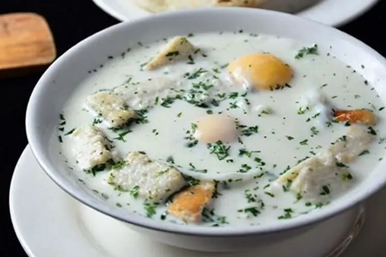

La Changua es una sopa tradicional de la región andina de Colombia, especialmente popular en Bogotá y el altiplano cundiboyacense. Se prepara principalmente con leche, agua, huevos, cebolla larga y cilantro, y generalmente se acompaña con pan o almojábana. Es un plato típico del desayuno colombiano, conocido por ser caliente, suave y reconfortante, ideal para empezar el día o para aliviar el frío de las zonas altas del país.
Para preparar Changua, primero coloca en una olla dos tazas de leche y dos tazas de agua y llévalas a fuego medio. Agrega la cebolla larga picada y una pizca de sal, y deja que la mezcla se caliente hasta que empiece a hervir suavemente. Este paso permite que la cebolla le dé sabor al caldo mientras la leche y el agua se integran.
Cuando el caldo esté caliente, agrega cuidadosamente los huevos directamente en la olla sin revolver demasiado, para que se cocinen enteros dentro del líquido. Deja cocinar por unos minutos hasta que la clara esté bien cocida y la yema tenga la consistencia deseada. Finalmente, añade cilantro fresco picado por encima y sirve caliente, acompañado con pan, arepa o almojábana, como es tradicional en el desayuno colombiano